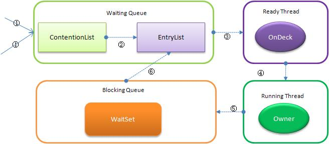
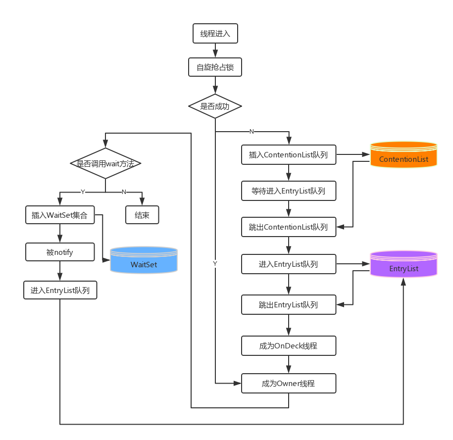
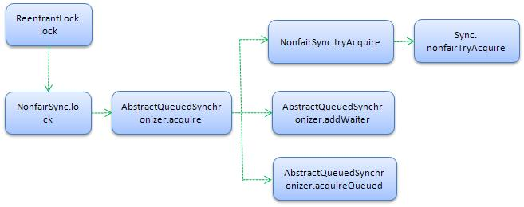

HELLO,
MY NAME IS XuJianGuo AND THIS IS MY BLOG
Synchronized和ReentrantLock之间的抉择
认识Synchronized
Synchronized是Java中的一个关键字，是一种互斥的同步手段，我们看看它的用法。
public class SynchronizedDemo {
private final Object target = new Object();
private int a = 0;
private static int b = 0;
public void lockTarget() {
synchronized (target) {
a++;
}
}
public synchronized void lockThis() {
a++;
}
public static synchronized void lockClass() {
b++;
}
}
Synchronized的核心思想就是锁住一个对象，在对象上加锁，在lockTarget方法中，synchronized锁住的是一个target的对象，在lockThis这个实例方法中，锁住的是this这个对象，在lockClass这个类方法中，锁住的是类对应的Class对象，所以在使用synchronized的时候，我们都需要显式或者隐式地指定一个对象。
通过javap命令，我们看看lockTarget编译成的字节码：
public void lockTarget();
descriptor: ()V
flags: ACC_PUBLIC
Code:
stack=3, locals=3, args_size=1
0: aload_0
1: getfield #3 // Field target:Ljava/lang/Object;
4: dup
5: astore_1
6: monitorenter
7: aload_0
8: dup
9: getfield #4 // Field a:I
12: iconst_1
13: iadd
14: putfield #4 // Field a:I
17: aload_1
18: monitorexit
19: goto 27
22: astore_2
23: aload_1
24: monitorexit
25: aload_2
26: athrow
27: return
Exception table:
from to target type
7 19 22 any
22 25 22 any
LineNumberTable:
line 7: 0
line 8: 7
line 9: 17
line 10: 27
StackMapTable: number_of_entries = 2
frame_type = 255 /* full_frame */
offset_delta = 22
locals = [ class SynchronizedDemo, class java/lang/Object ]
stack = [ class java/lang/Throwable ]
frame_type = 250 /* chop */
offset_delta = 4
我们可以很清除的看到其实JVM中是使用monitorenter指令和monitorexit指令去控制加锁和解锁。调用一次monitorenter指令，对象的锁计数器就+1，调用monitorexit就-1，当计数器为0的时候就释放锁。
在这里，我们可能会产生疑问，如果加锁的时候有线程进来，这些进程如何处理，放在哪里？说到这里，我觉得谈谈JVM关于线程这方面的处理机制了，下面是一张总体图：
ContentionList：所有请求锁的线程都首先被放进这个队列中。
EntryList：在ContentionList中有资格成为候选线程被移至这个队列中。
OnDeck：任何时刻只能有一个线程竞争锁，这个线程叫做OnDeck。
Owner：获得锁的线程。
WaitSet：调用了wait方法的线程被放到这个集合中，被唤醒了就调至EntryList中。
下面我们通过一幅流程图对各个环节来个大致的了解：
相信大家到这里对synchronized有个大致的认识，在使用synchronized的时候，其实它有几个缺点：
- 不能获取锁的线程阻塞，获取使用权的线程要唤醒，这些动作都需要从用户态切换到核心态，这个转换是非常消耗时间的，甚至比synchronized处理的逻辑的时间还要长。
- 等待队列中存在着很大的不公平性。我们在上面的流程中还有一些分析中可以知道，谁成为下个Owner线程都是不能确定的。
当然JVM也有对synchronized优化的地方，如引用了自旋锁和偏向锁。
自旋锁。当发生争用时，若Owner线程能在很短的时间内释放锁，则那些正在争用线程可以稍微等一等（自旋），在Owner线程释放锁后，争用线程可能会立即得到锁，从而避免了系统阻塞。但Owner运行的时间可能会超出了临界值，争用线程自旋一段时间后还是无法获得锁，这时争用线程则会停止自旋进入阻塞状态（后退）。基本思路就是自旋，不成功再阻塞，尽量降低阻塞的可能性，这对那些执行时间很短的代码块来说有非常重要的性能提高。
偏向锁。现在几乎所有的锁都是可重入的，也即已经获得锁的线程可以多次锁住/解锁监视对象，按照之前的HotSpot设计，每次加锁/解锁都会涉及到一些CAS操作（比如对等待队列的CAS操作），CAS操作会延迟本地调用，因此偏向锁的想法是一旦线程第一次获得了监视对象，之后让监视对象“偏向”这个线程，之后的多次调用则可以避免CAS操作。
认识ReentranLock
先不看原理，我们看看怎么用：
class ReentranLockDemo {
private ReentrantLock lock = new ReentrantLock();
public void lockSomething() {
//加锁
lock.lock();
try {
//同步代码
} finally {
//解锁
lock.unlock();
}
}
}
从上面看，可以发现ReentranLock的使用更加的直观，lock就是加锁，unlock就是解锁，在编程上具有很大的方便性，但是这样拆开来的话我们需要注意的一个严重的问题就是你加锁后就要解锁，如果你忘记unlock了，程序就很容易出现问题了，下面我们讲下ReentranLock的原理。
我们从一个lock方法的调用流程图看看里面运作的：
ReentranLock里面实现了两个锁，FairSync和NonFairSync，即是公平锁和非公平锁，默认调用的是非公平锁，NonFairSync实现上调用的是AbstractQueuedSynchronizer里面的方法，AbstractQueuedSynchronizer是一个Lock的抽象，将获取锁的方法和释放锁的方法延迟到子类中去实现，我们下面具体去看看源码的实现：
从构造方法知道ReentranLock两种锁。
public ReentrantLock(boolean fair) {
sync = fair ? new FairSync() : new NonfairSync();
}
ReentranLock调用的lock方法实际上调用的是在构造方法初始化哪个内部锁的lock方法。
public void lock() {
sync.lock();
}
下面是NonfairSync的lock方法，这个方法的思想也是很简单，首先用CAS操作对state变量进行设置，成功就获取当前线程的使用权，否则就调用acquire方法再去获取。这个state就是整个AbstractQueuedSynchronizer的核心所在，通过改变state的值来识别当前是否有对象持有锁。
final void lock() {
if (compareAndSetState(0, 1))
setExclusiveOwnerThread(Thread.currentThread());
else
acquire(1);
}
在acquire方法中，首先要去尝试获取锁，调用tryAcquire方法，如何不成功，就将这个线程封装成Node节点加入队列中。
public final void acquire(int arg) {
if (!tryAcquire(arg) &&
acquireQueued(addWaiter(Node.EXCLUSIVE), arg))
selfInterrupt();
}
前面我们说过tryAcquire是父类留给子类去实现的，在NonfairSync它实际上调用的是下面这个方法，我们可以很清除的看到当c==0的时候，通过CAS操作去获取锁，如果失败的话就返回false。当c！=0的时候，会判断当前的线程是不是已经拥有锁的线程，如果正确匹配的话就就可以重入，省去了CAS的操作，加载对state变量进行操作，这就是偏向锁，对于已经拥有锁的线程更加的偏向，省去很多操作。
final boolean nonfairTryAcquire(int acquires) {
final Thread current = Thread.currentThread();
int c = getState();
if (c == 0) {
if (compareAndSetState(0, acquires)) {
setExclusiveOwnerThread(current);
return true;
}
}
else if (current == getExclusiveOwnerThread()) {
int nextc = c + acquires;
if (nextc < 0) // overflow
throw new Error("Maximum lock count exceeded");
setState(nextc);
return true;
}
return false;
}
如果获取不到锁怎么办，只能等待了，加入队列中去等待，首先要创建一个节点，设置当前的线程，通过CAS操作加入队尾。
private Node addWaiter(Node mode) {
Node node = new Node(Thread.currentThread(), mode);
// Try the fast path of enq; backup to full enq on failure
Node pred = tail;
if (pred != null) {
node.prev = pred;
if (compareAndSetTail(pred, node)) {
pred.next = node;
return node;
}
}
enq(node);
return node;
}
acquireQueued方法的作用就是将加入队列中的节点进行阻塞，首先要调用tryAcquire方法去试探下能否获取锁，然后根据状态进行阻塞。
final boolean acquireQueued(final Node node, int arg) {
boolean failed = true;
try {
boolean interrupted = false;
for (;;) {
final Node p = node.predecessor();
if (p == head && tryAcquire(arg)) {
setHead(node);
p.next = null; // help GC
failed = false;
return interrupted;
}
if (shouldParkAfterFailedAcquire(p, node) &&
parkAndCheckInterrupt())
interrupted = true;
}
} finally {
if (failed)
cancelAcquire(node);
}
}
上面仅仅是加锁的过程，我们来看看解锁，在unlock方法中实际调用的是release方法，如何tryRelease成功的话，就将头节点唤醒，成功新锁的拥有者。
public final boolean release(int arg) {
if (tryRelease(arg)) {
Node h = head;
if (h != null && h.waitStatus != 0)
unparkSuccessor(h);
return true;
}
return false;
}
tryRelease的方法执行过程也是可以想象的，改正state状态，设置当前的执行线程为null，只有设置了这两个，别的线程才能获取锁。
protected final boolean tryRelease(int releases) {
int c = getState() - releases;
if (Thread.currentThread() != getExclusiveOwnerThread())
throw new IllegalMonitorStateException();
boolean free = false;
if (c == 0) {
free = true;
setExclusiveOwnerThread(null);
}
setState(c);
return free;
}
比较
synchronized和ReentranLock，一个是原生语法层面的互斥锁，一个是API层面的互斥锁，两个各种千秋，从上面原理的分析我们似乎页看到了点什么，我们从下面几个方面讨论一下：
可控性。对于synchronized，它的语法实现是在JVM中，我们在外部只是简单的使用这个关键字，无法对它控制什么，更多无法获取到一些线程的信息。ReentranLock是Java实现的，而且它提供给我们很多额外的信息，如当前线程保持此锁的次数，正等待获取此锁的线程的集合，查询当前线程是否保持此锁等等，所以ReentranLock对于我们是可控许多的。但是如果你不关心这些的话，synchronized是你代码最好理解的选择。
锁的类型。synchronized只提供非公平锁，当然也没有提供不提供的，它都是自己内容实现的。对于ReentranLock来说，在构造方法的时候就提供了给我们选择的权利，可以选择公平锁和非公平锁。两种锁最大的区别就是有没有抢占使用锁。
等待可中断。所谓的等待可中断就是持有锁的线程长期不释放锁的时候，正在等待的线程可以选择放弃等待，改为处理其他事情。对不起，又是ReentranLock，是的，它提供。
条件绑定。一个ReentranLock对象可以同时绑定多个Condition对象，而在synchronized中，锁的对象的wait方法和notify方法可以实现一个隐含的条件，但是如果要多条件关联的时候，就需要添加多一个锁，而ReentranLock则无需这样做，只需要多次调用newCondition方法即可。